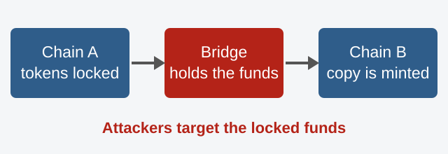

Security and Risks
Smart contracts hold real money and cannot be edited easily after they are deployed, so mistakes are costly. This page covers a famous bug, real hacks, and the extra risks that come with Layer 2 networks and bridges.
The DAO Hack (2016)
The DAO was an early Ethereum investment fund. An attacker used a bug called reentrancy to drain about 3.6 million ETH. The contract sent money out before it updated the balance, so the attacker’s code called back in and withdrew again and again. The community later chose to change the chain (a hard fork), which created Ethereum and Ethereum Classic.
Unsafe version (sends money first)
function withdraw() public {
uint amount = balances[msg.sender];
msg.sender.call{value: amount}(""); // attacker can call back in here
balances[msg.sender] = 0; // too late
}Safer version (checks, updates, then sends)
function withdraw() public {
uint amount = balances[msg.sender];
require(amount > 0);
balances[msg.sender] = 0; // update first
msg.sender.call{value: amount}(""); // send last
}This pattern is called checks-effects-interactions.
Large Hacks in 2022
| Incident | What happened | Lesson |
|---|---|---|
| Wormhole | A bridge bug let an attacker mint about $320 million of tokens | Bridges are a big target |
| Ronin | Attackers took control of validator keys, about $600 million lost | Few signers means few keys to steal |
| Beanstalk | A governance vote was bought with a flash loan, about $180 million lost | Voting rules can be attacked |
| Nomad | A setup mistake let anyone copy a withdrawal, about $190 million lost | One small bug can be copied by many people |
Bridge Risks
A bridge locks your coins on one chain and gives you a copy on another. If the locked funds are stolen, the copies become worthless.

Who Do You Have to Trust?
| Option | You trust | Main risk |
|---|---|---|
| Layer 1 directly | The Layer 1 validators | High fees |
| Rollup | Layer 1, plus the rollup’s code and upgrade keys | Bugs or admin keys |
| Sidechain | Its own validators | Weaker security than Layer 1 |
| Bridge | The bridge’s code and signers | Theft of locked funds |
Training Wheels on Rollups
Many rollups launched with “training wheels,” meaning a small group can step in to fix problems. That is safer early on, but it also means users trust that group. Over time, networks are removing these limits. For example, OP Mainnet added fault proofs in June 2024, and Arbitrum released BoLD in February 2025 for permissionless validation. The site L2BEAT groups rollups into stages to show how far along each one is.
Practical Safety Checklist
- Use well-known bridges and apps that have been audited, and start with a small test amount.
- Check the website address carefully before connecting a wallet.
- Read what a wallet asks you to sign. Do not approve things you do not understand.
- Never share your seed phrase.
- Never trust anyone who asks you to “upgrade” your ETH.
Takeaways
- Code is law only if the code is correct, so testing and audits matter.
- Every extra layer or bridge adds something else to trust.
- Layer 2 is cheaper, but you should know how each network is secured.
See also: Layer 2, Roadmap, References.